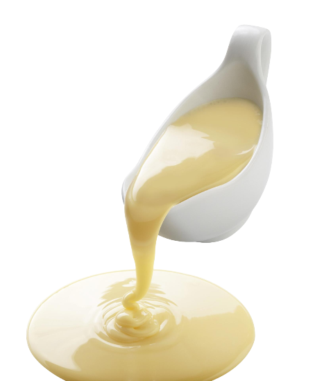
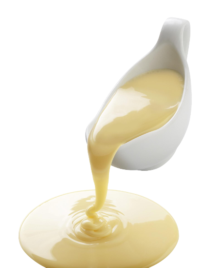

Vou ensinar vocês á fazer um delicioso bolo gelado, as crianças adoram.
Em uma batedeira, bata as claras em neve acrescentando o açúcar aos poucos e bata por 3 minutos. Adicione as gemas, o trigo, o suco e continue batendo até formar uma massa homogênea. Por último, adicione o fermento e bata por mais 40 segundos na menor velocidade da batedeira. Despeje a massa em uma forma média e untada. Asse em forno preaquecido em temperatura média de 180 °C por 40 minutos ou até dourar.
Em uma tigela, misture o leite de coco, o leite, o leite condensado e reserve. Após 40 minutos, retire o bolo do forno e fure toda a sua superfície com um garfo para facilitar a penetração da cobertura. Com o bolo ainda quente, despeje a cobertura sobre ele e salpique por cima o coco ralado. Leve a geladeira por 3 horas, depois corte o bolo em quadrados do tamanho que preferir e embrulhe com papel alumínio. Conserve na geladeira.
 
